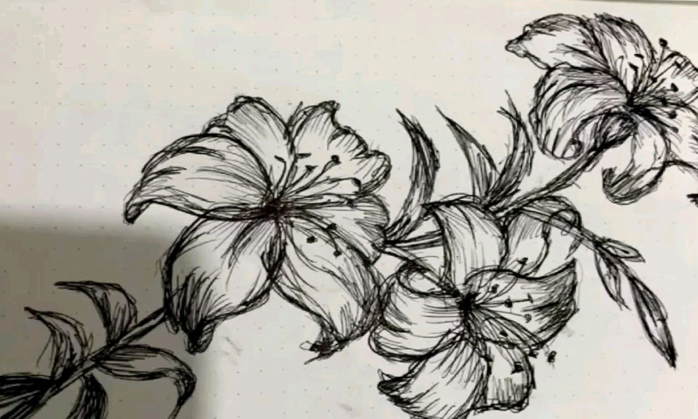
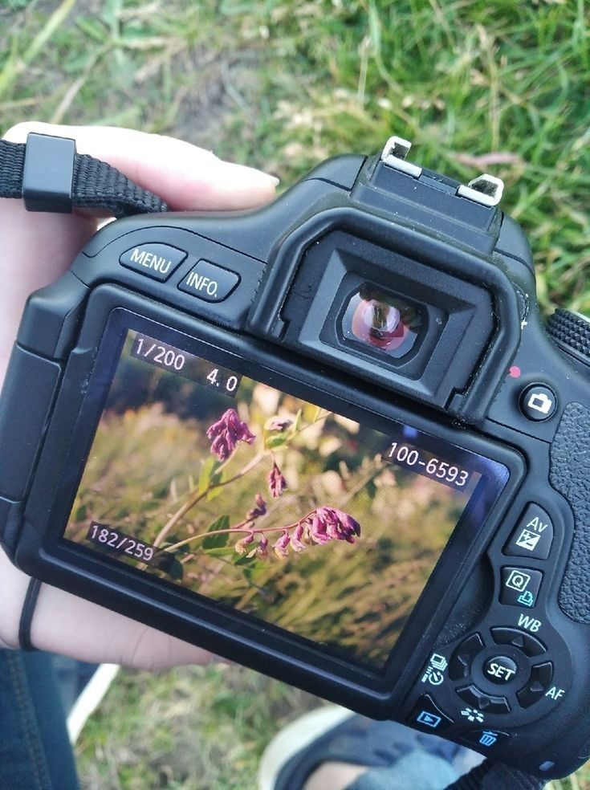
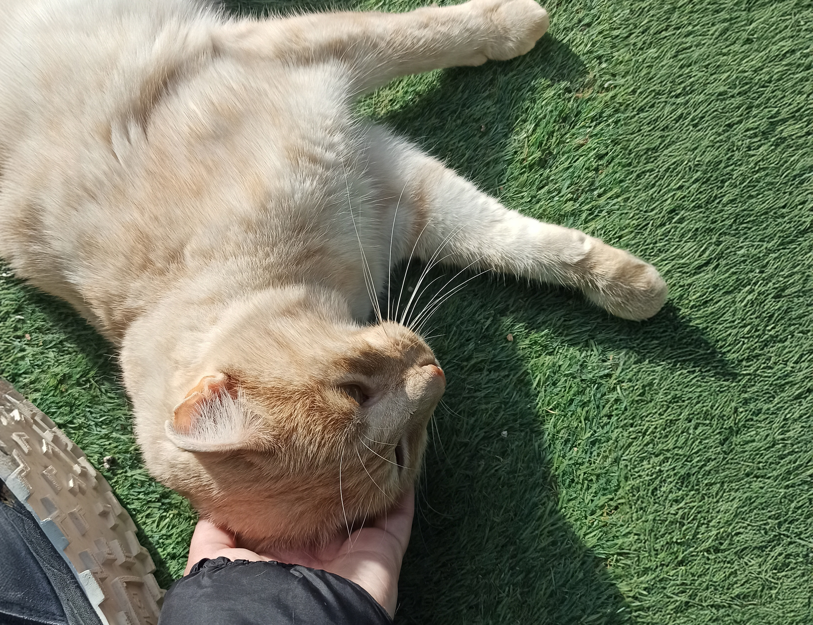
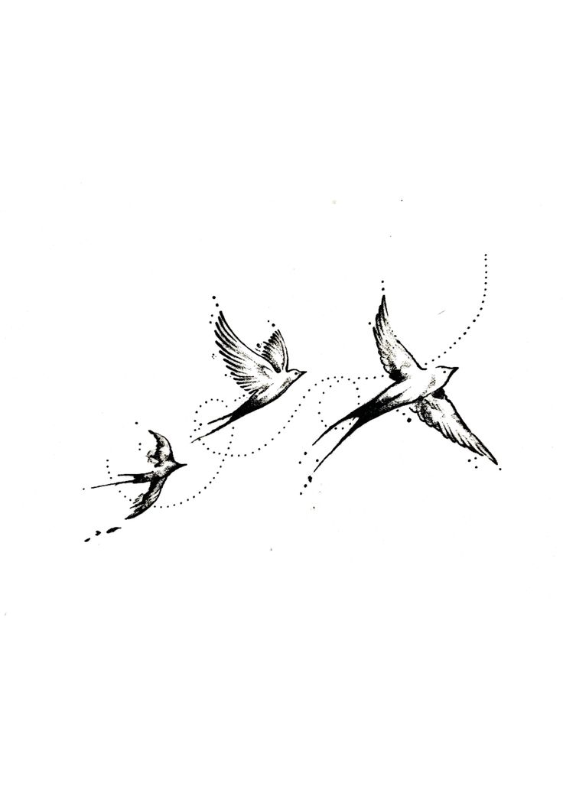

Experiencias:
Estudios
Curse un grado medio de Preimpresion Digital y ahora estoy cursando el grado superior de Diseño Gráfico y Publicaciones.
Experiencia laboral
He hecho practicas en las empresas Digitot de elche (3 meses), como Preimpresora y la empresa Destaca Imagen (3 semanas), como diseñadora
Hobbies
Lo que más me gusta hacer en mi tiempo libre es ver series, peliculas, dibujar y cuidar a los amimales.




